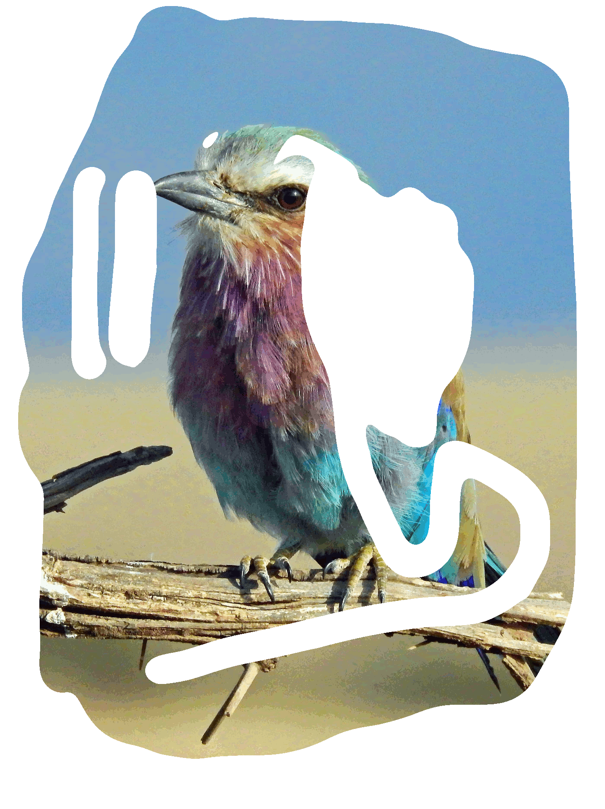

Width: 100 Pixels
Height: 134 Pixels
Size: 13.9 KBs
Image Quality: 80 = high quality
Discuss with your pair!
1. What happends, if images on website or mobile app are too large (too much pixels)?
The app becomes slow and the image takes a lot of space. It is hard to use it in different user interfaces.
2. What if the images are too small (less pixels)?
These images can be used as thumbnails but it will be awkward to enlarge them and use them.The images become blurred if used enlarged.
3. What if the images are not compressed enough?
The image will slowdown the app and also may not fit in the screen.
4. What if the images are too much compressed?
It takes less space but the quality is low.
5. What could be a general rule for a good size and amount of compression of an image in a mobile app or on a website?
The best rule is to change the image according to the context and the need of the program
Topic 3/4: Image editing
Bird and Saturn
Living room and saturn
Bedroom
Topic 4/4: Transparency and file formats
JPG
File format: JPG
JPG is lossless format.Quality of the compressed image is not lost.
It completely supports transparency.
JPG is best for media and web apps.
PNG
File Format: png
visual-quality: loss-less compression
transparency-support: supports both half and full transparency
file-size: 2.7 MB file-format fits the best: Anything which has
transparency unless you need animations.PNG is still well-suited to
storing images during the editing process because of its lossless
compression.//sth special about this file format: PNG excels when the
image has large, uniformly colored areas//
GIF

file format: .gif
visual-quality: it uses LZW lossless compression,
which is more effective when large areas have a single color //
transparency-support: supports full transparency //file-size: 818 KB
//file-format fits the best: GIF is most suitable for storing graphics
with few colors, simple animations //sth special about this file
format: Animations. Due to GIF's simplicity and age, it achieved
almost universal software support